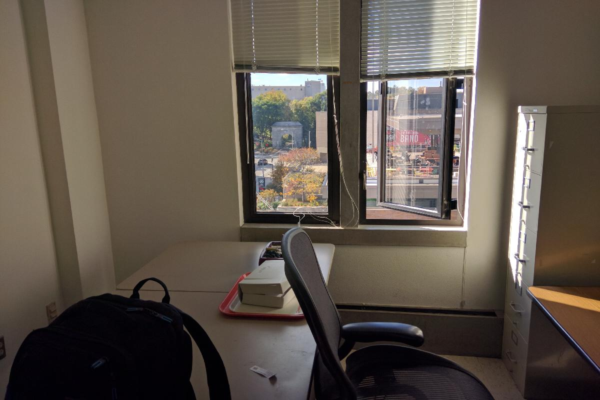
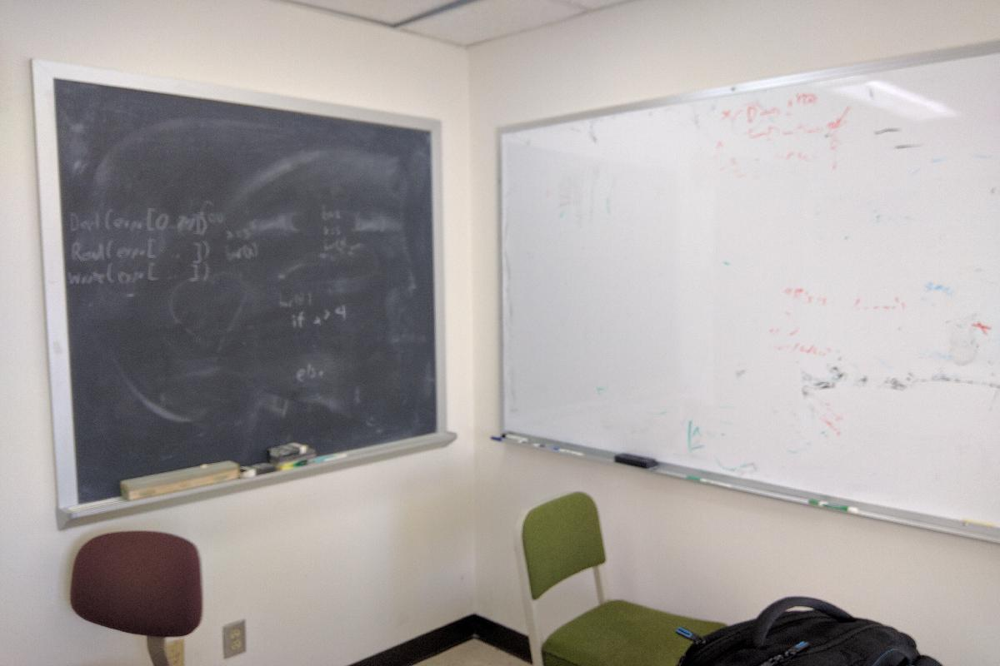
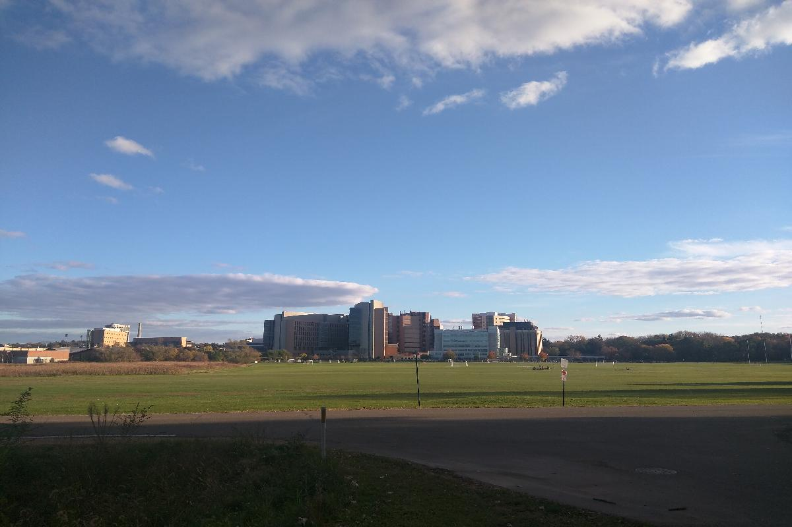

Day , Thursday, Oct 20 2016
廊桥一梦
- 也许天气渐凉，昨晚做了一个不好的梦。梦中回到了高中课堂，高考临近，却还有很多题不懂，在教室里，跑去找老师给我解答问题，有的老师无动于衷，有的老师百般推诿，身旁的同学都已经保送到了好学校，在一旁冷冷的看着我……直到梦醒，焦虑和无奈还充满了脑子，好像决定未来的那天就迫在眼前，我却无能为力。
- 梦醒回头品味，其实挺有意思。如果真能回到那时也挺好，至少很多事情还可以重来一次，又会新的希望和选择机会，现在开来，处境并不像梦里那么糟糕呢，梦中应该开心才是，只可惜梦中的我却看不透这一点。仔细想想，这个奇怪的梦境也许是当前的心里状态的一种映射吧。时间飞逝，渐渐和周围毕业工作同学朋友渐行渐远，生活和心理都有了些差距，我却并没有太大察觉，这个梦也算是一种提醒。不过话说回来，梦里我愁眉紧锁，梦醒后却觉得那时不错，是不是现在的困境也没有那么糟糕呢？
- 下午去听了Chuck教授的Computational photography。感觉教授是个风趣的老头子，讲课也挺有意思的。课上的内容基本之前上cv课都涉及过，有所了解，至于后续怎么办，还得看Miron这边的安排，希望能有机会和Chuck教授有更多的接触。听完课去办公室坐了一会，还是有些胆怯，看其他人都在忙，没去找他们聊一聊。不过Miron发信来联系明天能见一面，希望这边的学术之路能顺利开始吧。
- 晚上第一次在Nat游泳，十分痛快。游泳池不大，6泳道25米，但十分干净。值得一提的是，这里的公共区域，像泳池，淋浴间，厕所都很十分干净，而从未看到工作人随时打扫，联想到国内类似场所要么十分不堪，要么总有全职员工时刻清扫，让人心生疑惑。或许是他们在每天的固定时间集中整理，亦或是人均素质真的高到一定档次？不得而知。
Snapshot

- 位于CS楼的办公室一瞥。

- 办公室内的黑板，不知以后会否派上用场。
- 湖边的小公园，晨跑的最佳去处。
- 湖边一景，千帆竞流。

- 公寓旁的大草地，远处是医学院建筑群。蓝天白云，心旷神怡。
- 我的Wiscard，从此为Badger！
- Nat健身房一景，器械室划船机旁。